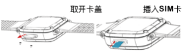
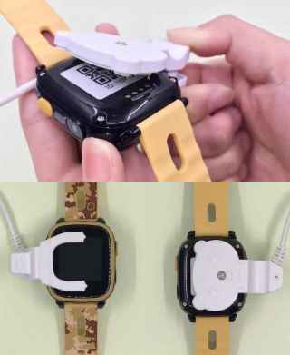

HT-790S儿童智能手表使用手冊
按键及接口说明

① 多功能按键：开关机/SOS键、亮/熄屏键
关机状态下，长按开机；
手表开机后，设备未能正常上线（包括未插入SIM卡、SIM卡无通信）时，长按开关机/SOS键时，设备会关机；
设备正常上线时，长按5s后，执行SOS报警功能；
开机状态下，短按为亮/熄屏功能。
② 返回键
③ 充电接口
④ SIM卡盖
⑤ 手电筒
⑥ 摄像头
绑定设备
步骤一：装卡说明-侧插卡（自剪卡可能会导致手表不读卡或损坏手表）。如下示意图，手表关关机状态下操作。打开手表防水塞SIM卡处，就可以看到SIM卡槽。准备好NanoSIM卡，将卡全部推进SIM卡槽，将SIM卡盖盖上，并拧上螺丝，安装完毕。

步骤二：开启已下载APP，按照APP的指引注册新的用户或登录已有账号，成功登录后选择“儿童手表”→选择“HT-790S”
步骤三：选择" HT-790S"后，请扫描手表上的二维码或手动输入设备的IMEI号进行绑定。
步骤四：绑定后即可通过APP对手表进行相关的设置。
功能及使用说明介绍
1.电话本功能：手表可设置15个电话本号码，这15个号码可与手表进行互相拨号，双向通话。电话本中的前3位默认为SOS紧急联系人。
2.SOS功能：设备正常上线时，长按开关机/SOS键3s后，执行SOS报警功能，无人接听时，手表会循环两轮拨打求救电话给3位紧急联系人；若3位紧急联系人任一位接听则停止循环拨打。
3.上课禁用：设置好上课禁用时间段后，手表将会锁住，可以防止小孩子在上课时玩手表，同时，也能防止外部电话或找手表打扰上课。
4.找手表：手表不在身边，发送该指令，手表会响铃一分钟以方便寻找，按任意键停止响铃。
5.通话功能：手表进入电话本中，选择联系人，即可拨打电话。
6.微聊功能：通过APP，可以给手表发送文字或语音，同样手表可发送语音到APP。另外，通过手表可以上传图片信息给到APP。
7.手表闹钟：通过APP可以给手表设置三组不同的提醒时间。
8.计步功能：可以记录宝贝当日运动步数等。
9.远程关机：手表开机正常工作后不能按键关机，只能通过APP远程关机。
10.手表语言设置：在APP设置项选取「手表时区和语言」，在语言项列表中选择所需语言并提交即可。
11.手表端还支持拍照、录像，学习，手电筒等功能。通过APP，您还可以对手表进行课程表、手表语言时区、计步、报警开关、定位、定位频率、远程监听、闹钟、找手表、远程关机等设置和操作。
充电介绍
请使用设备配备的专用充电线，设备支持使用主流手机适配器进行充电，为支持环保，未随机配置电源适配器，请选择您身边合适的适配器给设备充电即可。
充电说明图示

配件
1.充电线
2.使用说明书
3.螺丝刀
常见问题
1.为什么无法开机？
答：可能由于运输时间过长，电池耗尽电量导致，请连接充电器充电后会自动开机。
2.为什么无法为手表充电？
答：请确认充电线是否与机身接触良好。
3.为什么二维码扫描失败？
答：请调整手机摄像头与二维码之间的距离，或者在光线充足的地方再重新扫描。
4.每一台追踪手表，是否只能供一个帐户使用?
答：不是。第一个绑定追踪手表的帐户称为主帐户，主帐户最多可加入位三位成员（子帐户）监察追踪手表。子帐户需先于APP注册帐户，再由主帐户于APP「成员管理」授权子帐户。主帐户负责操控、管理、通讯和监察追踪手表，子帐户用作通讯和监察追踪手表，并没有操控和管理功能。
5.插入SIM卡，设备正常上线使用时，无法通过设备的开关机/SOS键关机？
答：设备正常上线时，请通过APP进行关机；设备未正常上线（包括未插入SIM卡或SIM卡无通信费）或当前通信信号很差时，才可通过设备的开机/SOS键关机。
6.为什么长按开机/SOS键时，设备有时会关机？
答：设备未正常上线（包括未插入SIM卡或SIM卡无通信费）或当前通信信号很差时，长按开关机/SOS键时，设备会关机。
注意事项
1.请将产品远离火源、高温高热等极端环境。
2.本说明书中的产品图片只限用于操作指导，产品请以实物为准。
3.本公司在不断升级和优化产品功能，如说明书所述内容与产品实际功能、规格或设计等略有不同，恕无法另行通知，敬请见谅。
售后服务
请咨询当地的业务人员或者我司售后服务中心。
联系我们
有任何问题或建议，欢迎您随时联系我们。
中国大陆
官方微信：航通守护者
客服QQ:3106893070
服务热线：0755-8601 8738
中国香港
服务热线：+852-26273380
邮箱：cs-liteguardian@castelbeidou.com
海外
邮箱: sales@castelbds.com
公司网页:www.lite-guardian.com
服务热线:+8675586018742